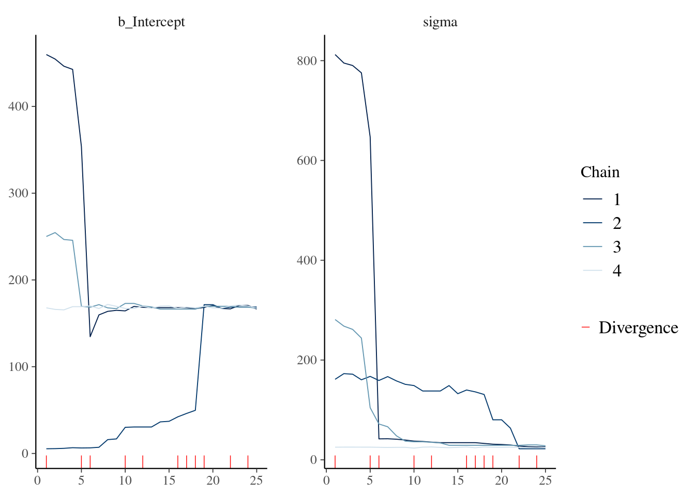
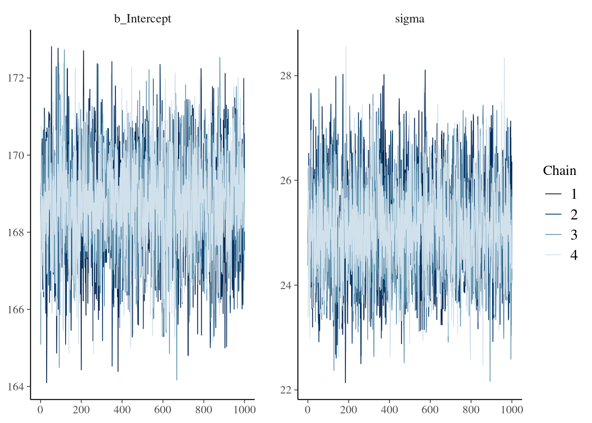
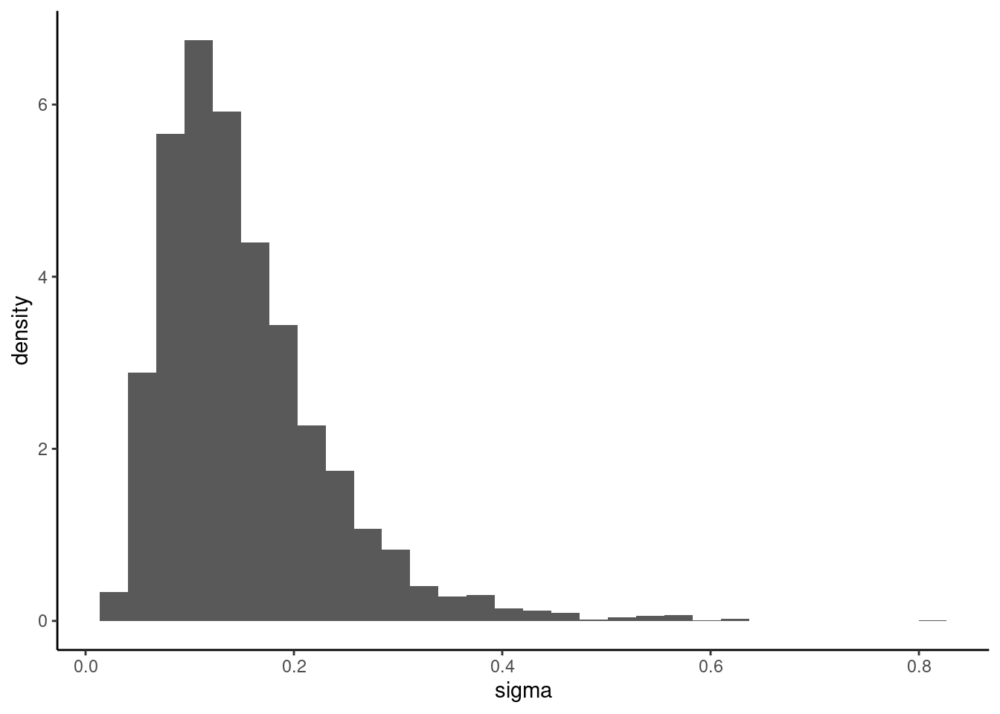
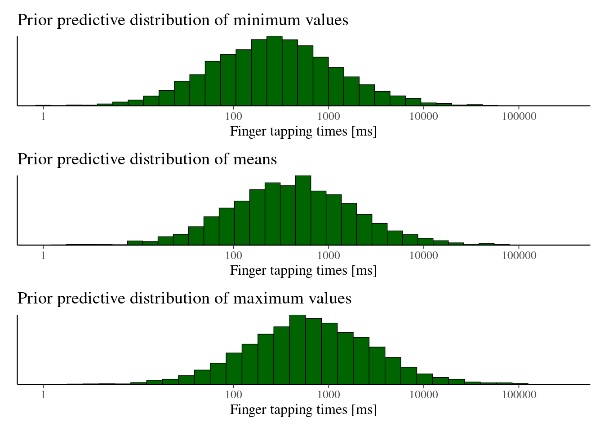
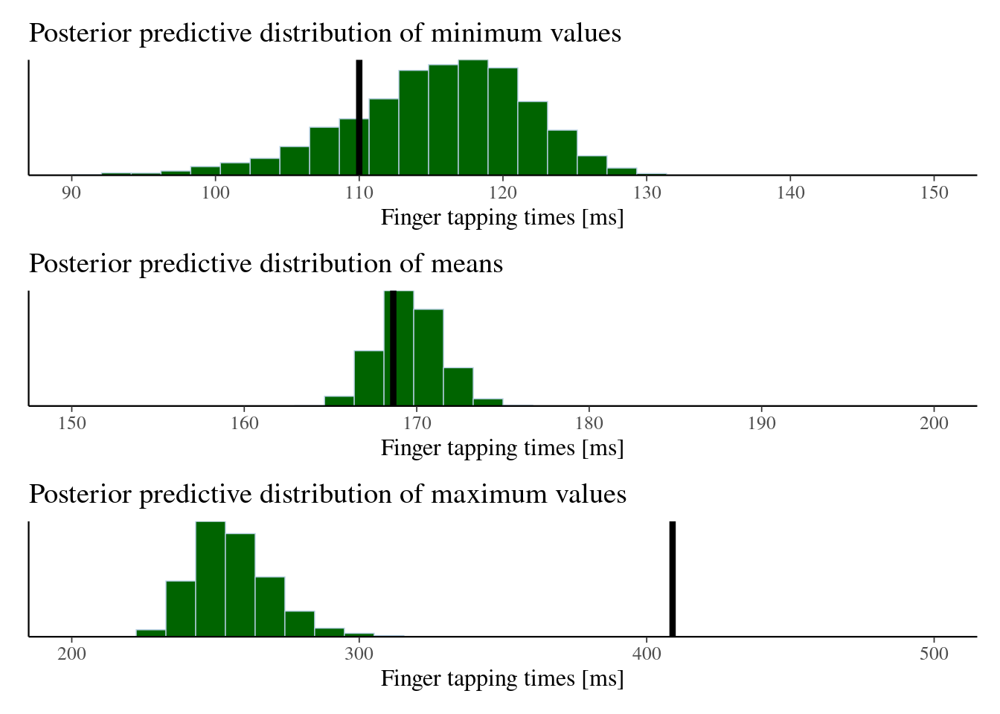

fit3.1 <-
brm(y ~ 1,
data = data.frame(y),
family = gaussian(),
prior = c(
prior(uniform(0, 60000), class = Intercept, lb = 0, ub = 60000),
prior(uniform(0, 2000), class = sigma, lb = 0, ub = 2000)
),
chains = 4,
iter = 2000,
warmup = 1000,
file_refit = "on_change",
file = "fits/fit3.1",
save_model = "models/model3.1.stan"
)Exercises chapter 3
Exercise 3.1 Check for parameter recovery in a linear model using simulated data.
Generate some simulated independent and identically distributed data with \(n=100\) data points as follows:
Next, fit a simple linear model with a normal likelihood:
\[ \begin{equation} y_n \sim \mathit{Normal}(\mu,\sigma) \tag{3.12} \end{equation} \]
Specify the following priors:
\[ \begin{equation} \begin{aligned} \mu &\sim \mathit{Uniform}(0, 60000) \\ \sigma &\sim \mathit{Uniform}(0, 2000) \end{aligned} \end{equation} \]
Generate posterior predictive distributions of the parameters and check that the true values of the parameters \(μ=500\), \(σ=50\) are recovered by the model. What this means is that you should check whether these true values lie within the range of the posterior distributions of the two parameters. This is a good sanity check for finding out whether a model can in principle recover the true parameter values correctly.
[1] "mean" 2.5% 50% 97.5%
499.9399 510.4989 521.1880 [1] "sigma" 2.5% 50% 97.5%
45.29420 52.01143 59.85601 Exercise 3.2 A simple linear model.
- Fit the model
fit_presswith just a few iterations, say 50 iterations (set warmup to the default of 25, and use four chains). Does the model converge?
fit3.2.a <-
brm(t ~ 1,
data = df_spacebar,
family = gaussian(),
prior = c(
prior(uniform(0, 60000), class = Intercept, lb = 0, ub = 60000),
prior(uniform(0, 2000), class = sigma, lb = 0, ub = 2000)
),
chains = 4,
iter = 50,
warmup = 25,
file_refit = "on_change",
file = "fits/fit3.2.a",
save_model = "models/model3.2.a.stan"
)
mcmc_plot(fit3.2.a, type="trace")
| 2.5% | 50% | 97.5% | |
|---|---|---|---|
| Intercept | 6.12 | 168.04 | 444.58 |
| sigma | 22.17 | 34.09 | 783.30 |
- Using normal distributions, choose priors that better represent your assumptions/beliefs about finger tapping times. To think about a reasonable set of priors for \(μ\) and \(σ\), you should come up with your own subjective assessment about what you think a reasonable range of values can be for \(μ\) and how much variability might happen. There is no correct answer here, we’ll discuss priors in depth in chapter 6. Fit this model to the data. Do the posterior distributions change?
fit3.2.b <-
brm(t ~ 1,
data = df_spacebar,
family = gaussian(),
prior = c(
prior(normal(400, 100), class = Intercept),
prior(normal(50, 20), class = sigma)
),
chains = 4,
iter = 2000,
warmup = 1000,
file_refit = "on_change",
file = "fits/fit3.2.b",
save_model = "models/model3.2.b.stan"
)
mcmc_plot(fit3.2.b, type="trace")
| 2.5% | 50% | 97.5% | |
|---|---|---|---|
| Intercept | 166.05 | 168.77 | 171.21 |
| sigma | 23.37 | 25.04 | 26.99 |
Exercise 3.4 Posterior predictive checks with a log-normal model.
- For the log-normal model
fit_press_ln, change the prior of \(σ\) so that it is a log-normal distribution with location (\(μ\)) of \(−2\) and scale (\(σ\)) of \(0.5\). What does such a prior imply about your belief regarding button-pressing times in milliseconds? Is it a good prior? Generate and plot prior predictive distributions. Do the new estimates change compared to earlier models when you fit the model?


- For the log-normal model, what is the mean (rather than median) time that takes to press the space bar, what is the standard deviation of the finger tapping times in milliseconds?
mean [ms] sd [ms]
170.1 23.0 Exercise 3.5 A skew normal distribution.
Would it make sense to use a “skew normal distribution” instead of the log-normal? The skew normal distribution has three parameters: location \(ξ\) (this is the lower-case version of the Greek letter \(Ξ\), pronounced “chi”, with the “ch” pronounced like the “ch” in “Bach”), scale \(ω\) (omega), and shape \(α\). The distribution is right skewed if \(α > 0\), is left skewed if \(α<0\), and is identical to the regular normal distribution if \(α=0\). For fitting this in brms, one needs to change family and set it to skew_normal(), and add a prior of class = alpha (location remains class = Intercept and scale, class = sigma).
- Fit this model with a prior that assigns approximately 95% of the prior probability of
alphato be between 0 and 10.
\[ \left. \begin{array}{r} \alpha \sim \mathcal{N}(\mu, \sigma) \\ Pr(0 \le \alpha \le 10) = .95 \\ Pr \left(\frac{0-\mu}{\sigma} \le \mathcal{N}(0,1) \le \frac{10-\mu}{\sigma} \right) = .95 \end{array} \right\} \Longrightarrow \left. \begin{array}{l} \frac{0-\mu}{\sigma} = -1.96 \\ \frac{10-\mu}{\sigma} = 1.96 \end{array} \right\} \Longrightarrow \left. \begin{array}{l} \mu = 5\\ \sigma = 5/1.96 \end{array} \right\} \]
- Generate posterior predictive distributions and compare the posterior distribution of summary statistics of the skew normal with the normal and log-normal.

| stat | intercept | sigma | ||||
|---|---|---|---|---|---|---|
| normal | log normal | skew normal | normal | log normal | skew normal | |
| mean | 168.71 | 170.10 | 169.67 | 25.07 | 23.00 | 24.04 |
| 2.5% | 166.05 | 167.76 | 167.24 | 23.37 | 21.32 | 22.20 |
| 97.5% | 171.21 | 172.50 | 172.24 | 26.99 | 24.80 | 26.03 |